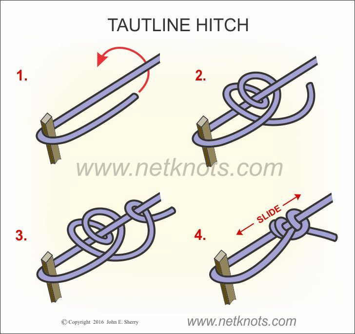
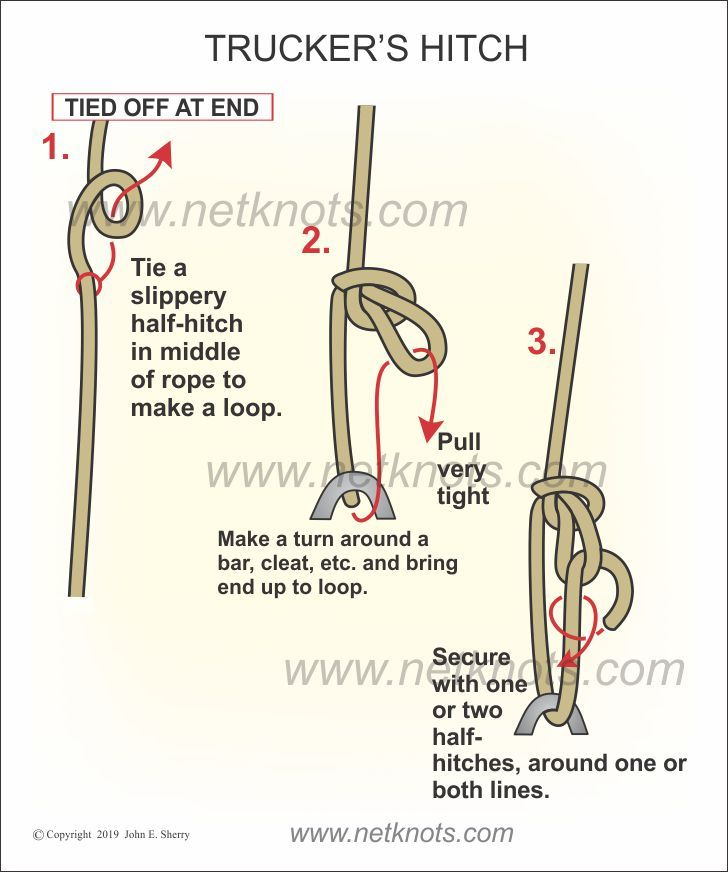
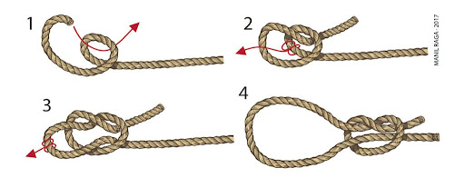

NUDOS DE AJUSTE
Los nudos de ajuste son aquellos que permiten modificar su tamaño o tensión fácilmente, adaptándose a diferentes situaciones. Estos nudos son útiles en actividades como campismo, navegación, pesca, escalada y rescate, ya que ofrecen flexibilidad para tensar o aflojar una cuerda según sea necesario.
NUDO TAUTLINE
- El nudo Tautline (también conocido como nudo corredizo ajustable) es un nudo muy útil para tensar cuerdas en campismo, náutica y otras actividades al aire libre. Permite ajustar la tensión de una cuerda mientras permanece firmemente anclado, siendo ideal para líneas guía de tiendas de campaña, toldos o amarres temporales.

NUDO DE CAMIONERO
- El nudo camionero o Trucker's Hitch es un nudo extremadamente práctico y versátil que permite tensar una cuerda con gran fuerza, gracias al uso de un sistema de polea improvisado. Es ampliamente utilizado para asegurar cargas en vehículos, remolques, y también en campismo o construcción.

NUDO CORREDIZO (SLIP KNOT)
- El nudo Slip Knot, también conocido como nudo corredizo, es un nudo básico y fácil de hacer que forma un lazo corredizo ajustable. Es ampliamente utilizado en diversas actividades, como pesca, campismo, tejido y manualidades. Su capacidad para ajustarse lo hace ideal para aplicaciones temporales.
